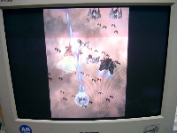
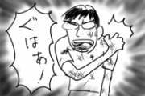
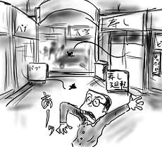
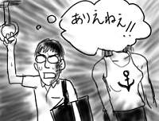
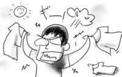

ようやく「斑鳩」をイージーでワンコインクリア。時間に勝った！(人生には負けてる気がします)
最後の方は心臓バクバクで、エンディング時には手が震えていたほどです(熱中しすぎ)。
しかし、5機スタートのエクステンド200万エブリ設定で、残機０のギリギリクリアなので、まだまだ精進が足りません。究極的な目標は成果をアーケードへ還元することであり、残機を出来るだけ多く、1機でも多く、先へ繋がなければなりません。旅路はまだまだ長いのです(ノーマルとか)。
というわけで、イージーをワンコインクリアすると使えるサウンドテストでBGMを聞きながらこれを書いています。斑鳩のサウンドは基本的に音質が悪いので、イヤフォンなんかで聞くと結構辛いのですが、その代わり(?)にサウンドテストでは各曲が流れるシーンのストーリーが読めるようになっています。ちょっと恥ずかしい文体ですが、脳内で大幅にアレンジを効かせて動画で読むと結構グッと来ます。(それは、もはや文章は要らないのでは)
あまり引用するとまだ見ていない人の興がそがれると思うので、一箇所だけ。
「１度…１度しか撃てんのだぞ！この意味がわかっとるのかッ！」
確かにこんなストイックなゲーム、１度きりしか出せない気がします。
「リターナー」を見てきましたよ。僕だって斑鳩で引きこもってばかりじゃないんです。そして、おもしろ(かった)！
批判にありがちな「どこかで見たようなアクションばっかり」というのは確かにあるんですけど、アクションシーンは大国産巨額予算映画に遜色ないくらいに渡り合っていながら、大国(中略)映画と違ってちゃんと脚本が書かれているのでトータルで勝ちじゃんと思います。ハードなアクション映画を展開しながら、そこはかとなく漂う藤子F臭もプラスポイントです。
言われているほど金城武の演技は気にならなかったし、鈴木杏はいい演技するなぁと思ったのですが、岸谷五朗の悪役だけは違和感を覚えました。ギター片手にシチューおかわりみたいなこと言ってた人がバンバン人殺してるよ！(それはCMです)
というか、樹木希林が！希林が無茶苦茶カッコいいんですけど。葉巻きプカーって！必見！(お正月を写し損なった人が！という違和感は覚えなかったので、そういうツッコミはなしの方向でお願いします)
公式ページにある予告編は割とナチュラルにネタバレしているので、鑑賞前には見ない方がよいかと思います。
朝早くに、d-directから「斑鳩」が届きました。
本当は発売日に手に入れたかったのですが、平日では受け取れないので仕方なく休日配達を希望したのです。友人達はあらかた5日の発売日に購入し、嬉しそうに僕に報告してくれたのですが、相当に悔しかったです。
というわけで、朝早くから延々と斑鳩。VGAアダプタを通してPCモニタでプレイする斑鳩の奇麗さは格別です。サウンドテストすらイージーを1コインクリアしないと使えないという狂いっぷりはどうなのか。プレイ時間が15時間を越えても使えるようになるみたいなので、これは時間との戦いです。

変換アダプタを繋いでサターン用のホリスティックを使っているのですが、これには当然ビジュアルメモリが刺さりません。「斑鳩」はポート1に繋いだビジュアルメモリしか扱えないらしくて、このままではセーブが出来ません。仕方ないので、
- ビジュアルメモリを刺したコントローラをポート1に繋いで起動(セーブデータのロード)
- コントローラを抜いてホリスティックに繋ぎ直す
- プレイ
- 終了時はホリスティックを抜いてコントローラを繋ぎ直し、メニューからセーブを選択
- 電源を切る
相当に面倒くさいです。
当面の目標は、イージー1コインクリアなのですが、行けるかも！という感じの快調プレイで、クリアまで残り1秒の所でゲームオーバー。泣いた。1日の集中力を出し切った感じです。

1日やってたら肩が無茶苦茶痛くなってきました。廃人一歩前(petit 廃人)です。
今日も都心を飛び越えて神奈川まで出張でした(以下略)。
帰りに大宮のCoCo壱で夕飯。スープカレーというのが期間限定メニューにあるようなのですが、今回は見送ってノーマルメニューを食べました。CoCo壱期間限定メニューは、いろいろ目先が変わっていて是非食べたいと思うのですが、CoCo壱に入る時はたいてい脳がノーマルCoCo壱カレールー禁断症状を訴えているので、特殊なルーを使用している期間限定メニューではいまいち満たされない。難しいものです。
カレーを普通に平らげ、だらだらと繁華街を駅の方まで歩いていると、目の前を飛び交う黒い虫が！やつが！ゴキが！
28年間生きてきましたが、屋外をナチュラルに飛び交うゴキというのは初めて見ました。すずらん通り恐るべし！

帰りにコンビニでココイチベビースターを買うと完璧だったと思うのですが、あいにくとサークルKがないので確保できませんでした。残念。
今日も都心を飛び越えて神奈川まで出張でした。
早起きは本当に辛いです。その代わりに、夜更かしなら大得意です(威張れない)。
眠気覚ましとして、満員電車内では人物観察に興じます(最低)。
今朝は、一緒にジムとか通ってそうなジョックスカップル(不自然なくらい健康的に焼けた肌、筋肉質で肩幅が広くて茶髪、金色のアクセサリ)が目の前にいたのですが、女性の方が着ていた白いニットのランニングシャツの胸に錨のマークが描かれていたのがとても印象的で眠気も吹っ飛びました。服の柄に錨！？ありえない！

絵で明らかですが、普段着で出張しました。
都心を飛び越えて神奈川まで出張でした。そのために朝７時起きをしたのですが、朝の「みんなが起き出して活動を始めた」あの感じがとても嫌いです。
みんながみんな同じ方向へ向かって並んで突進して行く様が気持ち悪くてたまらない。きっと朝になると何か操縦電波みたいなのが出るのだと思います。
出張帰りに新宿に立ち寄ったので、せっかくだからとタワーレコードに入ったところ、邦楽フロアに人垣が出来ています。何かと思っていたらソニンが登場！びびった。ラジオの公開録音らしく、人垣とソニンはラジオブースで完全に遮断されてました。触られたら危険だからネ！(横乳とかを)
そんなソニンブームに沸く店内では、なぜかカウボーイビバップのTank!や、芸能山城組のAKIRAサントラが鳴り響くと言う、一種異様な空間に。新宿で何が起こってますか！
異様に若作りしたテリー伊藤みたいなの(年齢も)が、まだ20歳くらいの女性を連れ歩いていたり、その女性がすごい舌足らずな甘えた声で「このまえー、アラニス・モリセットのーなんかアルバム出ててー超うれしくてー」とか言ってるのを聞いたり、いろいろおもしろい体験をしました。平日の魔界都市は怖いなぁ。というか、どれくらい伝わるかなぁ。
時折突風が吹くので、洗濯物をベランダに干しても、干した先から次々吹き飛ばされ、拾っては干し、拾っては干しを延々繰り返す羽目になったよ。

こういう体験をする度、前世の人生ゲームでビリを取ったペナルティを細々と払っている気がします(大げさ)。